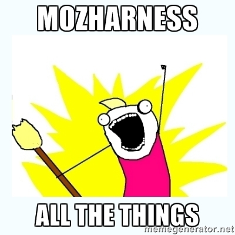

RelEng 2014
Where are we? Where are we going?
Retrospective
A look at how far we've come in a year.
| 2013 | 2014 |
| # of checkins per month | ~6,000 (apr) | ~8,000 (mar) (+33%) |
| CPU hours per push (m-c) | 295 (apr) | 325 (apr) (+10%) |
| Jobs per month | 1,219,428 (may) | 1,578,356 (mar) (+29%) |
| AWS spend | $78,156.42 (apr) | $31,219.94 (apr so far!) (- ~50%) |
MOAR Highlights

- Firefox builds
- L10n repacks
- VCS sync
- All the tests!?
(Planet RelEng is a great resource for this! Keep the blog posts coming!)
Branches
Last year we had 34 active branches:
alder ash birch build-system cedar cypress date devtools elm fig fx-team gaia-master graphics gum holly ionmonkey jaegermonkey jamun larch maple mozilla-aurora mozilla-b2g18 mozilla-b2g18_v1_0_1 mozilla-beta mozilla-central mozilla-esr17 mozilla-inbound mozilla-release oak pine profiling services-central try ux
This year we have 32!
ash b2g-inbound birch build-system cedar cypress date elm fig fx-team graphics gum holly jamun larch maple mozilla-aurora mozilla-b2g18 mozilla-b2g18_v1_1_0_hd mozilla-b2g26_v1_2 mozilla-b2g28_v1_3 mozilla-b2g28_v1_3t mozilla-b2g30_v1_4 mozilla-beta mozilla-central mozilla-esr24 mozilla-inbound mozilla-release oak services-central try ux
Releases
Two years ago we were releasing Firefox 3.6.28 (!!) and Firefox 11.
 We started using ship-it January 2013!
We've done 310 releases with it since then. 241 releases in the past 12 months, not including B2G releases. We've done 67 releases in 2014 alone.
In December, Mitchell was able to do a release for the first time in 15 years.
This is a testament to all our hard work building solid automation.
We started using ship-it January 2013!
We've done 310 releases with it since then. 241 releases in the past 12 months, not including B2G releases. We've done 67 releases in 2014 alone.
In December, Mitchell was able to do a release for the first time in 15 years.
This is a testament to all our hard work building solid automation.
Themes for 2014
Scaling more (and smarter)
- Cost efficiency: spot nodes, instance storage, multiplexing, and more!
- Reducing per-push load
- Better tools for bisecting (buildapi!)
Focus on developers!
Making great self-service tools, making our infrastructure more accessible:
- Slave loan tool
- Publishing AMIs, VM images, Docker containers, etc.
- self-serve scheduling
- autoland (mark IV)
- Balrog
(Insightful closing thoughts)
/
,@;@,
,@;@;@;@;@;@/ )@;@;
,;@;@;@;@;@;@|_/@' e\
(|@;@:@\@;@;@;@:@( \
'@;@;@|@;@;@;@;'`"--'
'@;@;/;@;/;@;'
) // | ||
\ \\ | ||
\ \\ ) \\
`"` `"``